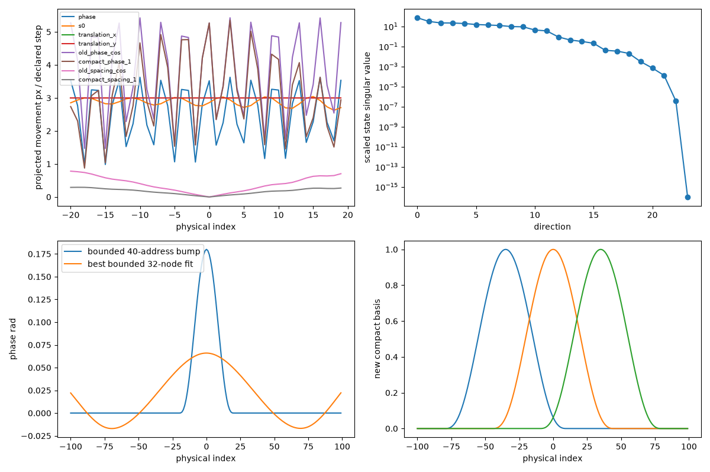
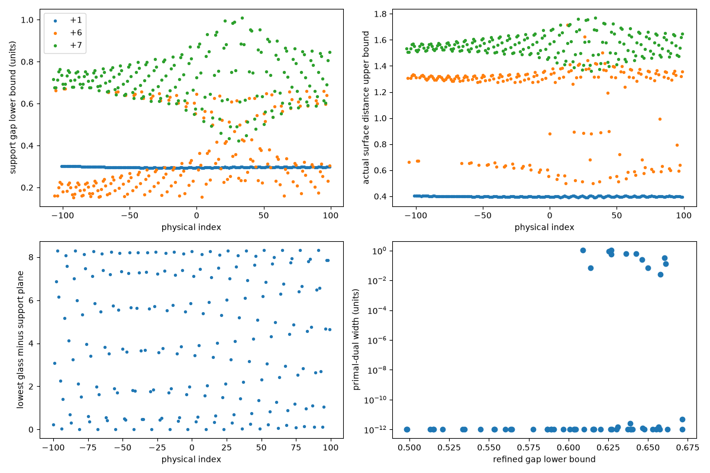

No reconstruction adopted. Indices and alternative assignments remain conditional. Original photograph only; removed-occluder panels are diagnostic counterfactuals, never physical candidates. White = external silhouette, cyan = bead occlusion boundary, magenta = model bore boundary. Exact masks in NPZ files. Pixel uncertainty and incomplete silhouettes remain explicit.
Report · Exact ledger JSON · Contact bounds · Sensitivity details · All inherited bright observations
All experiment results · Same-geography comparison · Error propagation
| Model | Feature / original point | Outcome | Plausible modeled alternatives | Evidence |
|---|---|---|---|---|
| R306-2405 | C-1559-0252 1563.76, 250.54 arc 62.43 | no 80percent isolated explanation | 15: isolated 70.4%, visible 2.4%; hides behind 20,14; 14: isolated 64.6%, visible 48.6%; hides behind 20,13; 20: isolated 40.8%, visible 40.8%; hides behind | photo layers · exact arrays |
| R306-2405 | C-1497-0271 1499.36, 271.20 arc 0.00 | surface plausibly explained | 0: isolated 84.8%, visible 84.8%; hides behind ; -4: isolated 55.0%, visible 0.0%; hides behind 0; -3: isolated 28.7%, visible 13.1%; hides behind 0,-1 | photo layers · exact arrays |
| R306-2405 | C-1477-0290 1480.38, 291.20 arc -19.81 | no 80percent isolated explanation | -9: isolated 48.1%, visible 8.4%; hides behind -7,-8,-1; -10: isolated 32.3%, visible 19.6%; hides behind -7,-1; -7: isolated 28.6%, visible 28.6%; hides behind | photo layers · exact arrays |
| R306-2405 | R282-1536-0239 1537.89, 235.79 arc 37.26 | plausible isolated hidden | 8: isolated 93.9%, visible 78.2%; hides behind 7,14; 7: isolated 10.3%, visible 10.3%; hides behind ; 14: isolated 5.3%, visible 5.3%; hides behind | photo layers · exact arrays |
| R306-2405 | R282-1537-0308 1538.95, 309.95 arc 40.79 | no 80percent isolated explanation | 11: isolated 66.4%, visible 16.7%; hides behind 12; 12: isolated 58.2%, visible 58.2%; hides behind ; 4: isolated 35.5%, visible 5.8%; hides behind 5,12,11 | photo layers · exact arrays |
| R306-2405 | R282-1459-0316 1459.74, 313.26 arc -42.25 | no 80percent isolated explanation | -8: isolated 57.3%, visible 57.3%; hides behind ; -15: isolated 42.0%, visible 33.6%; hides behind -14,-8; -9: isolated 23.1%, visible 0.0%; hides behind -8 | photo layers · exact arrays |
| R313-focused-3 | C-1559-0252 1563.76, 250.54 arc 62.43 | no 80percent isolated explanation | 15: isolated 77.2%, visible 0.0%; hides behind 20,14; 14: isolated 60.5%, visible 40.8%; hides behind 20; 20: isolated 56.1%, visible 56.1%; hides behind | photo layers · exact arrays |
| R313-focused-3 | C-1497-0271 1499.36, 271.20 arc 0.00 | surface plausibly explained | 0: isolated 97.9%, visible 97.9%; hides behind ; -4: isolated 47.2%, visible 0.7%; hides behind 0; -3: isolated 40.1%, visible 1.1%; hides behind 0,6 | photo layers · exact arrays |
| R313-focused-3 | C-1477-0290 1480.38, 291.20 arc -19.81 | no 80percent isolated explanation | -9: isolated 55.6%, visible 4.7%; hides behind -7,-1,-8; -7: isolated 38.8%, visible 38.8%; hides behind ; -1: isolated 25.2%, visible 25.2%; hides behind | photo layers · exact arrays |
| R313-focused-3 | R282-1536-0239 1537.89, 235.79 arc 37.26 | surface plausibly explained | 8: isolated 96.0%, visible 83.3%; hides behind 14,7; 14: isolated 12.2%, visible 12.2%; hides behind ; 9: isolated 6.1%, visible 0.0%; hides behind 8,14 | photo layers · exact arrays |
| R313-focused-3 | R282-1537-0308 1538.95, 309.95 arc 40.79 | no 80percent isolated explanation | 12: isolated 72.9%, visible 72.9%; hides behind ; 11: isolated 69.7%, visible 7.3%; hides behind 12; 4: isolated 36.3%, visible 0.8%; hides behind 12,5 | photo layers · exact arrays |
| R313-focused-3 | R282-1459-0316 1459.74, 313.26 arc -42.25 | no 80percent isolated explanation | -8: isolated 61.4%, visible 57.6%; hides behind -7; -15: isolated 52.5%, visible 22.0%; hides behind -14,-8; -9: isolated 23.7%, visible 0.0%; hides behind -8,-7 | photo layers · exact arrays |
| R312-local | C-1559-0252 1563.76, 250.54 arc 62.43 | no 80percent isolated explanation | 11: isolated 79.9%, visible 22.1%; hides behind 12,19,13; 12: isolated 39.1%, visible 38.1%; hides behind 13; 19: isolated 32.3%, visible 32.3%; hides behind | photo layers · exact arrays |
| R312-local | C-1497-0271 1499.36, 271.20 arc 0.00 | multiple isolated aliases | -3: isolated 97.2%, visible 2.8%; hides behind 0; 0: isolated 96.1%, visible 96.1%; hides behind ; -2: isolated 6.0%, visible 0.0%; hides behind 0 | photo layers · exact arrays |
| R312-local | C-1477-0290 1480.38, 291.20 arc -19.81 | no 80percent isolated explanation | -10: isolated 70.2%, visible 2.8%; hides behind -6,-5; -6: isolated 57.5%, visible 57.5%; hides behind ; -5: isolated 32.6%, visible 18.0%; hides behind -6 | photo layers · exact arrays |
| R312-local | R282-1536-0239 1537.89, 235.79 arc 37.26 | no 80percent isolated explanation | 5: isolated 54.4%, visible 52.0%; hides behind 6; 12: isolated 24.7%, visible 24.7%; hides behind ; 4: isolated 9.8%, visible 1.9%; hides behind 5,6,12 | photo layers · exact arrays |
| R312-local | R282-1537-0308 1538.95, 309.95 arc 40.79 | no 80percent isolated explanation | 8: isolated 76.4%, visible 63.9%; hides behind 14; 9: isolated 54.9%, visible 2.1%; hides behind 14,8; 14: isolated 32.4%, visible 32.4%; hides behind | photo layers · exact arrays |
| R312-local | R282-1459-0316 1459.74, 313.26 arc -42.25 | plausible isolated hidden | -11: isolated 92.9%, visible 61.0%; hides behind -12; -12: isolated 36.6%, visible 36.6%; hides behind ; -17: isolated 5.4%, visible 0.0%; hides behind -12 | photo layers · exact arrays |
| R315-narrow | C-1559-0252 1563.76, 250.54 arc 62.43 | plausible isolated hidden | 14: isolated 82.0%, visible 67.3%; hides behind 20; 15: isolated 62.6%, visible 0.3%; hides behind 14,20; 20: isolated 28.2%, visible 28.2%; hides behind | photo layers · exact arrays |
| R315-narrow | C-1497-0271 1499.36, 271.20 arc 0.00 | surface plausibly explained | 0: isolated 81.2%, visible 81.2%; hides behind ; -4: isolated 68.8%, visible 0.0%; hides behind 0; -3: isolated 8.5%, visible 5.3%; hides behind -1 | photo layers · exact arrays |
| R315-narrow | C-1477-0290 1480.38, 291.20 arc -19.81 | no 80percent isolated explanation | -9: isolated 53.7%, visible 5.3%; hides behind -7,-1,-8; -7: isolated 52.2%, visible 52.2%; hides behind ; -10: isolated 32.6%, visible 15.2%; hides behind -7 | photo layers · exact arrays |
| R315-narrow | R282-1536-0239 1537.89, 235.79 arc 37.26 | plausible isolated hidden | 8: isolated 86.5%, visible 74.5%; hides behind 7,14; 7: isolated 11.1%, visible 11.1%; hides behind ; 2: isolated 2.7%, visible 0.5%; hides behind 7 | photo layers · exact arrays |
| R315-narrow | R282-1537-0308 1538.95, 309.95 arc 40.79 | no 80percent isolated explanation | 12: isolated 69.5%, visible 69.5%; hides behind ; 11: isolated 50.9%, visible 2.9%; hides behind 12; 4: isolated 43.8%, visible 5.2%; hides behind 5,12 | photo layers · exact arrays |
| R315-narrow | R282-1459-0316 1459.74, 313.26 arc -42.25 | no 80percent isolated explanation | -15: isolated 63.7%, visible 24.4%; hides behind -14,-8; -8: isolated 41.0%, visible 41.0%; hides behind ; -14: isolated 32.5%, visible 32.5%; hides behind | photo layers · exact arrays |
Raw bracket-failure atlas · Finite boundary errors · Actual search coverage · Indexing and acceptance · Relative positions · Packing and paper · Sensitivity / phase and spacing

